Introduction:
library(tidyverse)
install.packages('fivethirtyeightdata', repos = 'https://fivethirtyeightdata.github.io/drat/', type = 'source')
library(fivethirtyeightdata)
library(fivethirtyeight)
view(bechdel)
bechdel2<- na.omit(bechdel)This dataset (bechdel) observes individual movies from 1990-2013. The dataset is based on the Bechdel test, which observes the presence of women in Hollywood movies. With this test, movies either pass or fail (as represetnted by the ‘binary’ variable) based on how many women are present and named in the film, whether the women talk to eachother in the film, and whether the women are talking about something other than men. It is important to note that this is not a definitive way of determinign gender equity in Hollywood movies, but it is the best test available that is aimed at doing so. The clean_test variable has 5 categories based on how a movie scores in the Bechdel test. ‘Ok’ means the movie passed the test, ‘dubious’ means it is unclear as to whether the movie passed the test, ‘men’ means there are more than 2 named women who talk to each other but they only talk about men, ‘notalk’ means there are more than 2 named women but they dont talk to eachtoher, and ‘nowomen’ means that there are less than 2 named women in the movie. There are also numeric variables including ‘budget_2013’, ‘domgross_2013’, and ‘intgross_2013’, which observe the movies’ budget, domestic gross profit, and international gross profit, respectively. The numbers are adjusted for inflation as of the year 2013. The goal of this project is to draw conclusions about the funding of movies taking into account their representation of women, and to determine whether movies that exclude women make more, less, or equal profits as do movies that do not. After omitting all observations containing containing NAs, this dataset includes 1600 observations.Each observation/row is a discrete movie title.
MANOVA:
library(mvtnorm); library(ggExtra)
df<-rmvnorm(1000,mean=c(0,0),sigma=matrix(c(1,.5,.5,1),ncol=2,byrow=T))
df<-data.frame(df)%>%rename(Y1=X1,Y2=X2)
p<-ggplot(df, aes(Y1,Y2))+geom_point(alpha=.5)+geom_density_2d(h=2)+coord_fixed()
ggMarginal(p,type="density",xparams = list(bw=.5), yparams=list(bw=.5))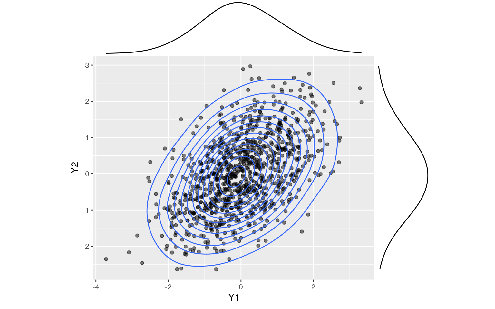
ggplot(bechdel2, aes(x = budget_2013, y = domgross_2013)) + geom_point(alpha = .5) + geom_density_2d(h=2) + coord_fixed() + facet_wrap(~clean_test)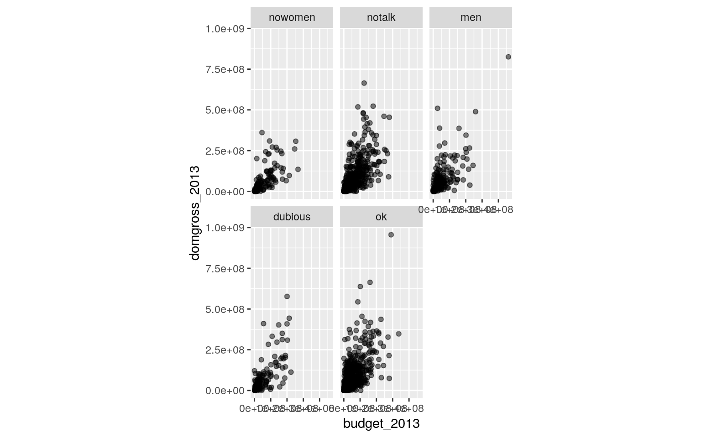
ggplot(bechdel2, aes(x = budget_2013, y = intgross_2013)) + geom_point(alpha = .5) + geom_density_2d(h=2) + coord_fixed() + facet_wrap(~clean_test)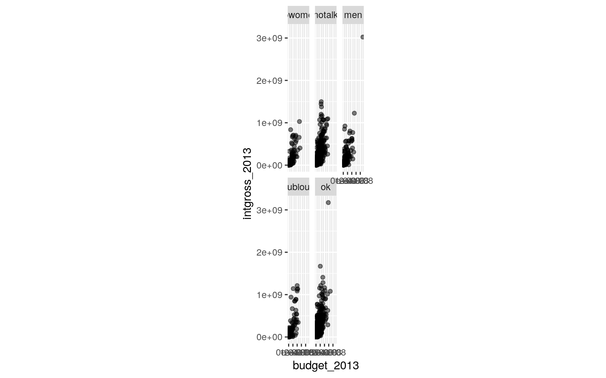
ggplot(bechdel2, aes(x = domgross_2013, y = intgross_2013)) + geom_point(alpha = .5) + geom_density_2d(h=2) + coord_fixed() + facet_wrap(~clean_test)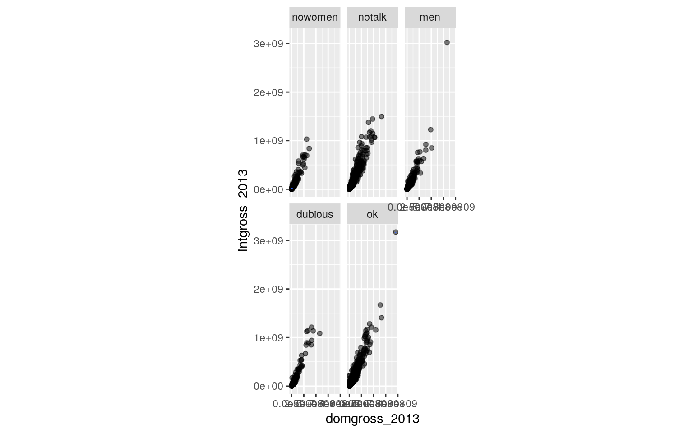
library(rstatix)
group <- bechdel2$clean_test
DVs <- bechdel2 %>% select(budget_2013,domgross_2013,intgross_2013)
#Test multivariate normality for each group (null: normality met)
sapply(split(DVs,group), mshapiro_test)## nowomen notalk men dubious ok
## statistic 0.7675301 0.7808307 0.4253033 0.7800541
0.5852304
## p.value 2.187554e-12 4.885181e-24 5.287573e-23
2.704621e-12 1.04771e-38lapply(split(DVs,group), cov) #separate covariance matrices for each group## $nowomen
## budget_2013 domgross_2013 intgross_2013
## budget_2013 3.488912e+15 2.945717e+15 8.447480e+15
## domgross_2013 2.945717e+15 6.472868e+15 1.582120e+16
## intgross_2013 8.447480e+15 1.582120e+16 4.314498e+16
##
## $notalk
## budget_2013 domgross_2013 intgross_2013
## budget_2013 3.233411e+15 3.586344e+15 1.005390e+16
## domgross_2013 3.586344e+15 1.059738e+16 2.534781e+16
## intgross_2013 1.005390e+16 2.534781e+16 6.873760e+16
##
## $men
## budget_2013 domgross_2013 intgross_2013
## budget_2013 4.246817e+15 4.583137e+15 1.451532e+16
## domgross_2013 4.583137e+15 1.148187e+16 3.015461e+16
## intgross_2013 1.451532e+16 3.015461e+16 9.066426e+16
##
## $dubious
## budget_2013 domgross_2013 intgross_2013
## budget_2013 3.825788e+15 4.708393e+15 1.266265e+16
## domgross_2013 4.708393e+15 1.172131e+16 2.942168e+16
## intgross_2013 1.266265e+16 2.942168e+16 7.956547e+16
##
## $ok
## budget_2013 domgross_2013 intgross_2013
## budget_2013 2.479584e+15 3.068230e+15 8.445462e+15
## domgross_2013 3.068230e+15 8.995550e+15 2.230498e+16
## intgross_2013 8.445462e+15 2.230498e+16 6.111412e+16box_m(DVs, group)## # A tibble: 1 x 4
## statistic p.value parameter method
## <dbl> <dbl> <dbl> <chr>
## 1 117. 2.71e-14 24 Box's M-test for Homogeneity of
Covariance Matricesbechdelmanova<- manova(cbind(budget_2013, domgross_2013, intgross_2013) ~ clean_test, data = bechdel2)
summary(bechdelmanova)## Df Pillai approx F num Df den Df Pr(>F)
## clean_test 4 0.039395 5.3059 12 4785 5.572e-09 ***
## Residuals 1595
## ---
## Signif. codes: 0 '***' 0.001 '**' 0.01 '*' 0.05 '.' 0.1
' ' 1summary.aov(bechdelmanova)## Response budget_2013 :
## Df Sum Sq Mean Sq F value Pr(>F)
## clean_test 4 1.5648e+17 3.9120e+16 12.816 2.855e-10 ***
## Residuals 1595 4.8686e+18 3.0524e+15
## ---
## Signif. codes: 0 '***' 0.001 '**' 0.01 '*' 0.05 '.' 0.1
' ' 1
##
## Response domgross_2013 :
## Df Sum Sq Mean Sq F value Pr(>F)
## clean_test 4 1.4235e+17 3.5588e+16 3.6586 0.005664 **
## Residuals 1595 1.5515e+19 9.7272e+15
## ---
## Signif. codes: 0 '***' 0.001 '**' 0.01 '*' 0.05 '.' 0.1
' ' 1
##
## Response intgross_2013 :
## Df Sum Sq Mean Sq F value Pr(>F)
## clean_test 4 9.6182e+17 2.4046e+17 3.6195 0.006064 **
## Residuals 1595 1.0596e+20 6.6433e+16
## ---
## Signif. codes: 0 '***' 0.001 '**' 0.01 '*' 0.05 '.' 0.1
' ' 1bechdel2%>%group_by(clean_test)%>%summarize(mean(budget_2013),mean(domgross_2013), mean(intgross_2013))## # A tibble: 5 x 4
## clean_test `mean(budget_2013)` `mean(domgross_2013)`
`mean(intgross_2013)`
## <ord> <dbl> <dbl> <dbl>
## 1 nowomen 65472900. 74606246. 173735249.
## 2 notalk 69829341. 97743812. 222021962.
## 3 men 59813043. 87298025. 187938516.
## 4 dubious 62751722. 87875132. 205241655.
## 5 ok 47343994. 76317777. 165255435.pairwise.t.test(bechdel2$budget_2013, bechdel2$clean_test, p.adj="none")##
## Pairwise comparisons using t tests with pooled SD
##
## data: bechdel2$budget_2013 and bechdel2$clean_test
##
## nowomen notalk men dubious
## notalk 0.44625 - - -
## men 0.39384 0.04531 - -
## dubious 0.70234 0.20852 0.65406 -
## ok 0.00095 1.5e-11 0.00832 0.00422
##
## P value adjustment method: nonepairwise.t.test(bechdel2$domgross_2013, bechdel2$clean_test, p.adj="none")##
## Pairwise comparisons using t tests with pooled SD
##
## data: bechdel2$domgross_2013 and bechdel2$clean_test
##
## nowomen notalk men dubious
## notalk 0.02354 - - -
## men 0.28416 0.24203 - -
## dubious 0.29662 0.32589 0.96068 -
## ok 0.86100 0.00029 0.19264 0.22880
##
## P value adjustment method: nonepairwise.t.test(bechdel2$intgross_2013, bechdel2$clean_test, p.adj="none")##
## Pairwise comparisons using t tests with pooled SD
##
## data: bechdel2$intgross_2013 and bechdel2$clean_test
##
## nowomen notalk men dubious
## notalk 0.07047 - - -
## men 0.64645 0.14415 - -
## dubious 0.34296 0.52265 0.57167 -
## ok 0.73992 0.00024 0.30304 0.11117
##
## P value adjustment method: none#total 30 t tests + 3 ANOVA + 1 MANOVA = 34 total tests
# α = 0.05/34 = 0.0015total tests = 30 t tests + 3 ANOVA + 1 MANOVA = 34 total tests bonferroni α = 0.05/34 = 0.0015 The adjusted significance level (bonferroni correction) is 0.0015. This significance level is used in all subsequent analyses.
The overall MANOVA was significant (Pillai trace = 0.039395, pseudo F(12,4785) = 5.3059, p < 0.0001). Univariate ANOVAs for each dependent variable were conducted as follow-up tests to the MANOVA, using the Bonferroni method for controlling Type I error rates for multiple comparisons. Only one univariate ANOVA (for budget_2013) showed a significant mean difference across levels of the clean_test categorical variable (F(4,1595) = 12.816, p < 0.0001).
Post hoc analysis was performed conducting pairwise comparisons (t-tests) to determine which clean_test results differed in budget_2013. Movies who passed the bechdel test (ok) were found to differ significantly from movies in which women did not talk to each other (no talk) and movies which did had less than 2 women (no women) in terms of budget.
MANOVA has multiple assumptions, most of which appear to have been met. This includes random samples and independent observations. Since each movie is it’s own row or observation, this assumption is met. Another assumption is Multivariate normality of DVs and linear relationships among DVs, which appears to be true. Within group co-variance matrices are homogeneous. There are no extreme univariate or multivariate outliers and DVs don’t appear to be too correlated.
Randomization Test:
ggplot(bechdel2,aes(domgross_2013,fill=binary))+geom_histogram(bins=100)+
facet_wrap(~binary,ncol=2)+theme(legend.position="none")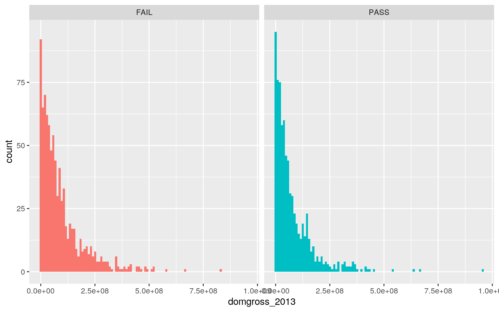
# Ho = mean domestic gross profit (adjusted for inflation) is the same for movies who passed vs. failed the Bechdel test
# Ha = mean domestic gross profit (adjusted for inflation) is different for movies who passed vs. failed the Bechdel test
bechdel2%>% group_by(binary) %>% summarize(means=mean(domgross_2013)) %>% summarize(diff(means))## # A tibble: 1 x 1
## `diff(means)`
## <dbl>
## 1 -14768357.rand_dist<-vector()
for(i in 1:5000){
new<-data.frame(domgross_2013=sample(bechdel2$domgross_2013),binary=bechdel2$binary)
rand_dist[i]<-mean(new[new$binary=="PASS",]$domgross_2013)- mean(new[new$binary=="FAIL",]$domgross_2013)}
mean(rand_dist>18901999 | rand_dist < -18901999) #p-value## [1] 2e-04{hist(rand_dist,main="",ylab=""); abline(v = c(-14768357, 14768357),col="red")}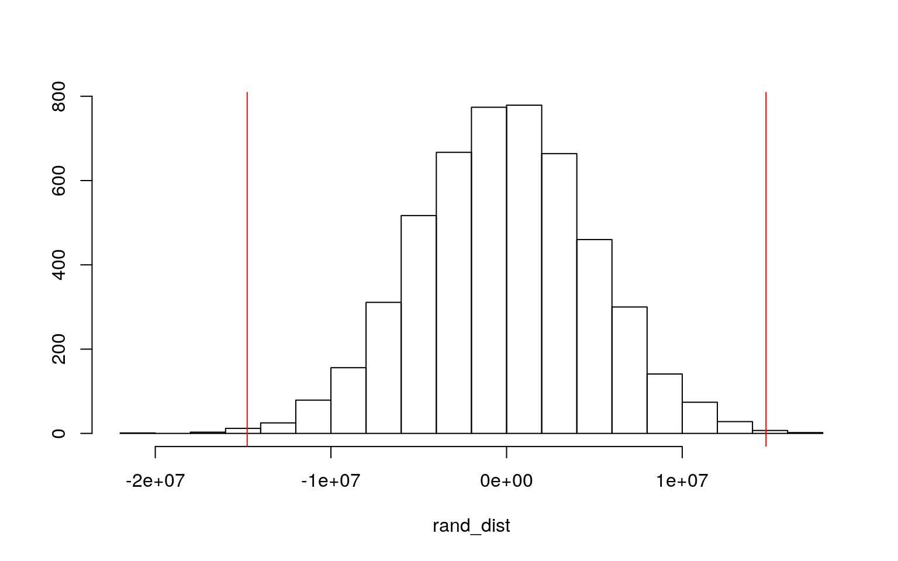 We failed to reject the null hypothesis. This means that there is not a significant difference in mean domestic gross profit between movies that passed vs failed the Bechdel test. The practical application to this is that we should have no reason to believe that excluding women in Hollywood movies leads to increased (or decreased) profits from those movies here in the United States.
Linear Regression Model:
library(tidyverse)
#linear regression model
bechdel2$budget_2013_c <- bechdel2$budget_2013 - mean(bechdel2$budget_2013)
mean(bechdel2$budget_2013)## [1] 57456564bechdelfit<- lm(domgross_2013~budget_2013_c*binary, data = bechdel2)
summary(bechdelfit) #get R-squared values to explain variation##
## Call:
## lm(formula = domgross_2013 ~ budget_2013_c * binary,
data = bechdel2)
##
## Residuals:
## Min 1Q Median 3Q Max
## -288871790 -34567463 -15145445 18057147 579004318
##
## Coefficients:
## Estimate Std. Error t value Pr(>|t|)
## (Intercept) 8.154e+07 2.618e+06 31.146 <2e-16 ***
## budget_2013_c 1.086e+00 4.346e-02 24.987 <2e-16 ***
## binaryPASS 7.289e+06 3.859e+06 1.889 0.0591 .
## budget_2013_c:binaryPASS 1.515e-01 7.075e-02 2.142
0.0324 *
## ---
## Signif. codes: 0 '***' 0.001 '**' 0.01 '*' 0.05 '.' 0.1
' ' 1
##
## Residual standard error: 75780000 on 1596 degrees of
freedom
## Multiple R-squared: 0.4147, Adjusted R-squared: 0.4136
## F-statistic: 376.9 on 3 and 1596 DF, p-value: < 2.2e-16#plot of regression
ggplot(bechdel2, aes(budget_2013_c,domgross_2013, color = binary)) + geom_smooth(method = "lm", se = F, fullrange = T) + geom_point()+geom_vline(xintercept=0,lty=2)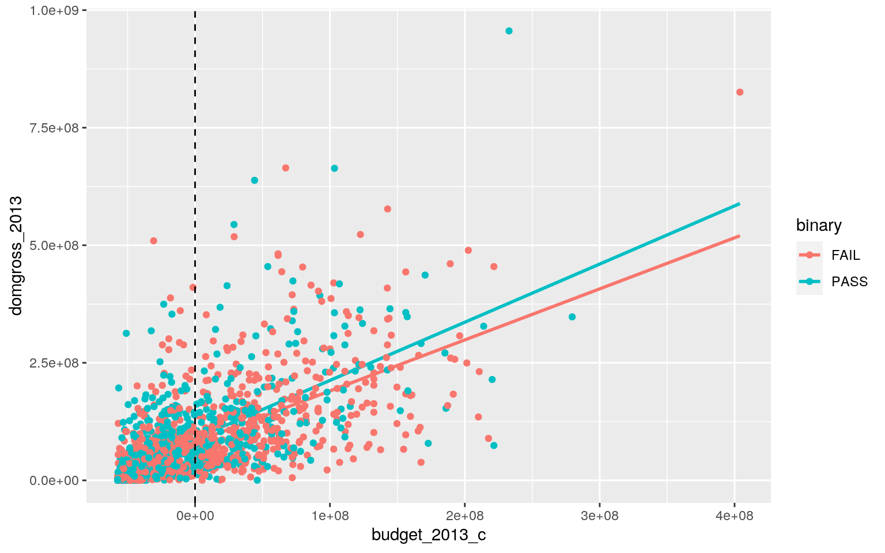
#check assumptions
resids<-bechdelfit$residuals
fitvals<-bechdelfit$fitted.values
ggplot()+geom_point(aes(fitvals,resids))+geom_hline(yintercept=0, color='red')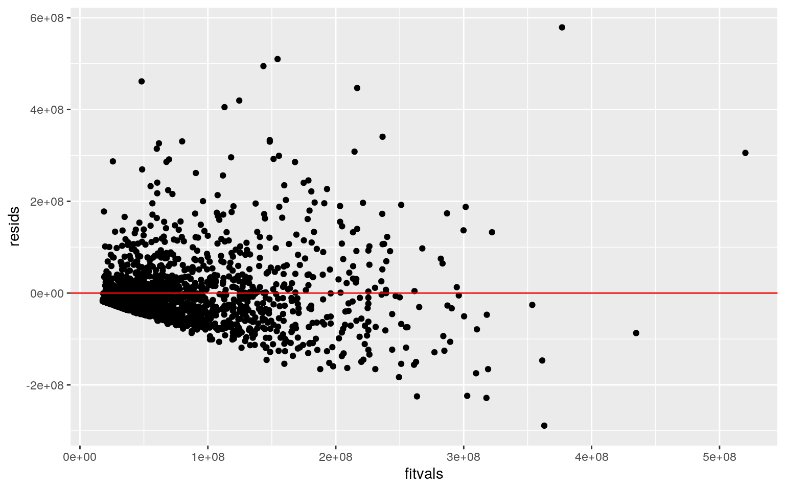
library(sandwich); library(lmtest)
bptest(bechdelfit) #formally confirms heteroskedasticity##
## studentized Breusch-Pagan test
##
## data: bechdelfit
## BP = 140.7, df = 3, p-value < 2.2e-16ggplot() +geom_histogram(aes(resids), bins = 100)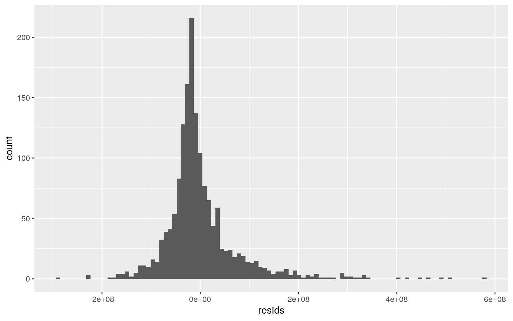
#robust SEs
summary(bechdelfit)$coef[,1:2]## Estimate Std. Error
## (Intercept) 8.154200e+07 2.618018e+06
## budget_2013_c 1.085865e+00 4.345727e-02
## binaryPASS 7.289040e+06 3.858847e+06
## budget_2013_c:binaryPASS 1.515325e-01 7.074829e-02coeftest(bechdelfit, vcov = vcovHC(bechdelfit))[,1:2]## Estimate Std. Error
## (Intercept) 8.154200e+07 2.430186e+06
## budget_2013_c 1.085865e+00 7.171596e-02
## binaryPASS 7.289040e+06 4.240484e+06
## budget_2013_c:binaryPASS 1.515325e-01 1.344724e-01A movie with a $0 budget does not have a resonable application, so this variable was mean centered (budget_2013_c). The intercept coefficient (8.154e+07) corresponds to the mean/predicted domestic gross profit for a movie that failed the Bechdel test with an average budget (57,456,564 dollars). For movies that have an average budget and pass the Bechdel test, the domestic gross profit is 7.289e+06 times higher than those who don’t pass the Bechdel test. The estimated slope of budget on domestic gross profit for movies that failed the Bechdel test is 1.086e+00. The coefficent for budget_2013_c:binaryPASS is the difference in slopes between budget and movies that passed the Bechdel test. For every one unit increase in budget, predicted domestic gross proifit goes up 1.515e-01 for this group.
The proportion of variation in the outcome that this model explains is 0.4147 (multiple R-squared). After adjusting for having multiple explanatory variables in the model, this proportion comes to 0.4126 (adjusted R-squared). This adjusted estimate is more conservative than the multiple R-squared.
Based on the fanning pattern from the graph, the data violates the homoskedasticity assumption but linearity looks okay. Normality also looks okay based on the second graph.
Since the data was heteroskedastic, robust standard errors were corrected and the results were similar. The coefficient estimates remained the same as the original model. However, the corrected standard errors are slightly larger and therefore should be used for the sake of being more conservative.
Bootstrapping:
samp_distn<-replicate(5000, {
boot_dat <- sample_frac(bechdel2, replace=T)
fitboot <- lm(domgross_2013~budget_2013_c+binary, data=boot_dat)
coef(fitboot) })
samp_distn %>% t %>% as.data.frame %>% summarize_all(sd)## (Intercept) budget_2013_c binaryPASS
## 1 2510030 0.06076473 3984233boot_dat <- sample_frac(bechdel2, replace=T)
fitboot <- lm(domgross_2013~budget_2013_c+binary, data=boot_dat)
summary(fitboot)##
## Call:
## lm(formula = domgross_2013 ~ budget_2013_c + binary,
data = boot_dat)
##
## Residuals:
## Min 1Q Median 3Q Max
## -238776344 -34604814 -15339547 15298921 607289362
##
## Coefficients:
## Estimate Std. Error t value Pr(>|t|)
## (Intercept) 8.171e+07 2.635e+06 31.015 <2e-16 ***
## budget_2013_c 1.132e+00 3.546e-02 31.937 <2e-16 ***
## binaryPASS 3.268e+06 3.867e+06 0.845 0.398
## ---
## Signif. codes: 0 '***' 0.001 '**' 0.01 '*' 0.05 '.' 0.1
' ' 1
##
## Residual standard error: 75480000 on 1597 degrees of
freedom
## Multiple R-squared: 0.3983, Adjusted R-squared: 0.3975
## F-statistic: 528.5 on 2 and 1597 DF, p-value: < 2.2e-16The bootstrapped standard errors for the intercept, budget_2013 mean centered variable, and binaryPASS condition are 2585312, 0.05989816, and 3951322, respectively. P-values and standard errors remain very similar (compared to both the original SEs and the robust SEs).
Logistic Regression Model:
library(lmtest)
data<-bechdel2%>%mutate(y=ifelse(binary=="FAIL",1,0))
data$binary<-factor(data$binary,levels=c("FAIL","PASS"))
#1 = fail bechdel test
#0 = pass bechdel test
fitlog<-glm(binary~budget_2013+intgross_2013, data=data, family="binomial")
coeftest(fitlog)##
## z test of coefficients:
##
## Estimate Std. Error z value Pr(>|z|)
## (Intercept) 2.2100e-01 7.3609e-02 3.0023 0.002679 **
## budget_2013 -8.4406e-09 1.3601e-09 -6.2058 5.44e-10 ***
## intgross_2013 6.0280e-10 2.8244e-10 2.1342 0.032824 *
## ---
## Signif. codes: 0 '***' 0.001 '**' 0.01 '*' 0.05 '.' 0.1
' ' 1coef(fitlog)%>%data.frame #log odds scale coefficients## .
## (Intercept) 2.209957e-01
## budget_2013 -8.440589e-09
## intgross_2013 6.027989e-10coef(fitlog)%>%exp%>%round(5)%>%data.frame #odds scale coefficients## .
## (Intercept) 1.24732
## budget_2013 1.00000
## intgross_2013 1.00000odds2prob<-function(odds){odds/(1+odds)} #function to convert odds to probs
odds2prob(1.24732) #probabiltiy of failing Bechdel test when budget and intgross are zero## [1] 0.5550255odds2prob(1)## [1] 0.5probs<-predict(fitlog,type="response") #get predicted probs from the model
#using .5 as the threshold for predicting failing the bechdel test
table(predict=as.numeric(probs>.5),truth=data$y)%>%addmargins## truth
## predict 0 1 Sum
## 0 337 525 862
## 1 407 331 738
## Sum 744 856 1600#Accuracy = (true positives + true negatives)/ total population
331+337 #668## [1] 668#sensitivity(TPR): probability of predicting a failure if a movie really did fail the test.
331/856 #0.3866822## [1] 0.3866822#specificity (TNR): probability of predicting a pass for movies that really passed the test
337/744 #0.452957## [1] 0.452957#Precision (PPV): the proportion classified as failing the test that actually did
331/738 #0.4485095## [1] 0.4485095#denstiy plot
data$logit<- predict(fitlog, type = "link")
data %>% mutate(y = as.factor(y)) %>% ggplot()+geom_density(aes(logit, color = y, fill = y), alpha = 0.4)+ geom_vline(xintercept = 0) +xlab("logit(logodds)")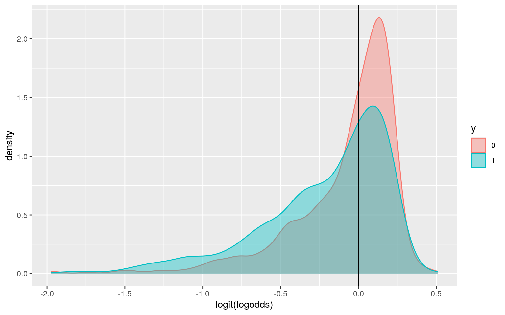
#ROC curve
data$probs <-predict(fitlog,type="response")
library(plotROC)
ROCplot<-ggplot(data)+geom_roc(aes(d=y,m=probs), n.cuts=0)
ROCplotcalc_auc(ROCplot)## PANEL group AUC
## 1 1 -1 0.3955743The coefficient for budget_2013 indicates that increasing by 1 dollar in budget multiplies odds by a factor of about 1.000. When converted to probability, this means that there is about a 50% chance of failing the Bechdel test when international gross profit is zero. The result is the same for the intgross_2013 coefficient and correlates to a 50% chance of failing the bechdel test when budget is zero. The coefficient for the intercept indicates that when budget and international gross profit are zero, there is a 0.5550255 probability of failing the Bechdel test.
Accuracy, Sensitivity (TPR), Specificity (TNR), Precision (PPV), and AUC of the model are 668, 0.3866822, 0.452957, 0.4485095, and 0.3955743, as outlined and explained above. The AUC for the ROC curve is 0.3955743.
Logistic Regression of ALL Variables:
#in-sample logistic regression
fitlog2<-glm(binary~budget_2013+intgross_2013+domgross_2013, data=data, family="binomial")
coeftest(fitlog2)##
## z test of coefficients:
##
## Estimate Std. Error z value Pr(>|z|)
## (Intercept) 2.2883e-01 7.8700e-02 2.9077 0.003642 **
## budget_2013 -8.4611e-09 1.3616e-09 -6.2142 5.159e-10 ***
## intgross_2013 7.7566e-10 6.7451e-10 1.1500 0.250158
## domgross_2013 -4.6247e-10 1.6408e-09 -0.2819 0.778054
## ---
## Signif. codes: 0 '***' 0.001 '**' 0.01 '*' 0.05 '.' 0.1
' ' 1coef(fitlog2)%>%data.frame #log odds scale coefficients## .
## (Intercept) 2.288310e-01
## budget_2013 -8.461074e-09
## intgross_2013 7.756634e-10
## domgross_2013 -4.624706e-10coef(fitlog2)%>%exp%>%data.frame #odds scale coefficients ## .
## (Intercept) 1.25713
## budget_2013 1.00000
## intgross_2013 1.00000
## domgross_2013 1.00000probs2<-predict(fitlog2,type="response") #get predicted probs from the model
#using .5 as the threshold for predicting failing the bechdel test
table(predict=as.numeric(probs2>.5),truth=data$y)%>%addmargins## truth
## predict 0 1 Sum
## 0 342 522 864
## 1 402 334 736
## Sum 744 856 1600odds2prob(1.25713)## [1] 0.5569595#Accuracy = (true positives + true negatives)/ total population
334+342 #676## [1] 676#sensitivity(TPR): probability of predicting a failure if a movie really did fail the test.
334/856 #0.3901869## [1] 0.3901869#specificity (TNR): probability of predicting a pass for movies that really passed the test
342/744 #0.4596774## [1] 0.4596774#Precision (PPV): the proportion classified as failing the test that actually did
334/736 #0.4538043## [1] 0.4538043data$probs2 <-predict(fitlog2,type="response")
ROCplot2<-ggplot(data)+geom_roc(aes(d=y,m=probs2), n.cuts=0)
ROCplot2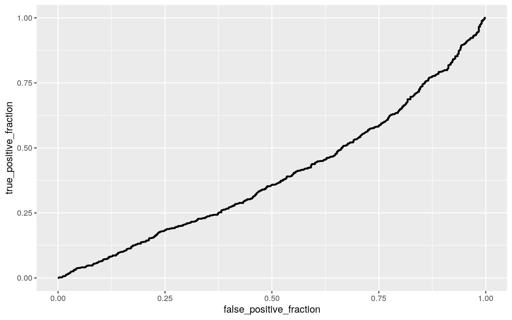
calc_auc(ROCplot2)## PANEL group AUC
## 1 1 -1 0.3957156The coefficient for budget_2013 indicates that increasing by 1 dollar in budget multiplies odds by a factor of about 1.000. When converted to probability, this means that there is about a 50% chance of failing the Bechdel test when international gross profit and domestic gross profit are zero. The result is the same for the intgross_2013 coefficient and correlates to a 50% chance of failing the bechdel test when budget and domgestic gross profit are zero. Again, the same result occurrs for domgross_2013, in which there is a 50% chance of failing the test when budget and international gross profit are both zero. Finally, the coefficient for the intercept indicates that when budget and international gross profit are zero, there is a 0.5569595 probability of failing the Bechdel test. Accuracy, Sensitivity (TPR), Specificity (TNR), Precision (PPV), and AUC of the model are 676, 0.3901869, 0.4596774, 0.4538043, and 0.3957156, as outlined and explained above. The AUC is based on all possible cutoffs/traeoffs and essentially summarizes sensitivity and specificity, so since the AUC is low here, this means that the model is not predicting very well.
#class_diag function
class_diag<-function(probs,truth){
tab<-table(factor(probs>.5,levels=c("FALSE","TRUE")),truth)
acc=sum(diag(tab))/sum(tab)
sens=tab[2,2]/colSums(tab)[2]
spec=tab[1,1]/colSums(tab)[1]
ppv=tab[2,2]/rowSums(tab)[2]
if(is.numeric(truth)==FALSE & is.logical(truth)==FALSE) truth<-as.numeric(truth)-1
#CALCULATE EXACT AUC
ord<-order(probs, decreasing=TRUE)
probs <- probs[ord]; truth <- truth[ord]
TPR=cumsum(truth)/max(1,sum(truth))
FPR=cumsum(!truth)/max(1,sum(!truth))
dup<-c(probs[-1]>=probs[-length(probs)], FALSE)
TPR<-c(0,TPR[!dup],1); FPR<-c(0,FPR[!dup],1)
n <- length(TPR)
auc<- sum( ((TPR[-1]+TPR[-n])/2) * (FPR[-1]-FPR[-n]) )
data.frame(acc,sens,spec,ppv,auc)
}
#10 fold CV
k=10
cvdata<-data[sample(nrow(data)),]
folds<-cut(seq(1:nrow(data)),breaks=k,labels=F)
diags<-NULL
for(i in 1:k){
train<-cvdata[folds!=i,]
test<-cvdata[folds==i,]
truth<-test$binary
fitlog2<-glm(binary~budget_2013+intgross_2013+domgross_2013, data=data, family="binomial")
probs3<-predict(fitlog2,newdata = test,type="response")
diags<-rbind(diags,class_diag(probs3,truth))
}
summarize_all(diags,mean) ## acc sens spec ppv auc
## 1 0.5775 0.5412073 0.6102953 0.545647 0.6044223The accuracy, sensitivity, specificity, precision, and AUC values for the 10-fold cross validation model are 0.5775, 0.5410074, 0.6101294, 0.5470705, and 0.6048802, respectively. This AUC is much higher than that of the previous logistic regression in-sample model (0.3957156). The AUC is based on all possible cutoffs/traeoffs and essentially summarizes sensitivity and specificity, so since the AUC is higher here, this means that the model is predicting better than the in-sample model.
#LASSO
library(glmnet)
y<-as.matrix(data$binary)
x<-model.matrix(binary~ budget_2013+ domgross_2013+ intgross_2013,data=data)[,-1]
head(x)## budget_2013 domgross_2013 intgross_2013
## 1 13000000 25682380 42195766
## 2 45658735 13611086 41467257
## 3 20000000 53107035 158607035
## 4 61000000 75612460 132493015
## 5 40000000 95020213 95020213
## 6 225000000 38362475 145803842x<- scale(x)
cv<-cv.glmnet(x,y,family="binomial")
{plot(cv$glmnet.fit, "lambda", label = TRUE); abline(v = log(cv$lambda.1se)); abline(v = log(cv$lambda.min), lty=2)}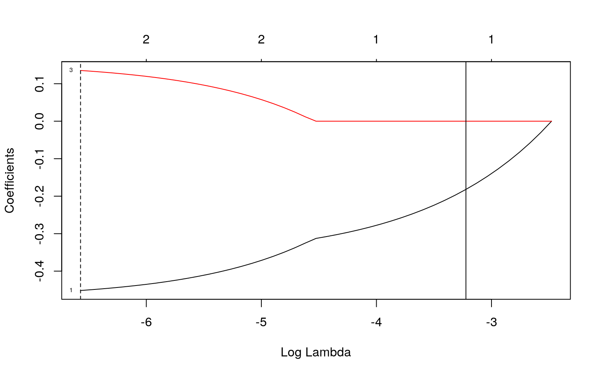
lasso<-glmnet(x,y,family="binomial",lambda=cv$lambda.1se)
coef(lasso)## 4 x 1 sparse Matrix of class "dgCMatrix"
## s0
## (Intercept) -0.1421390
## budget_2013 -0.1819424
## domgross_2013 .
## intgross_2013 .After conduction a LASSO, the only variable which was retained is the budget_2013 variable.
#10 fold CV with only LASSO chosen variable (budget_2013)
k=10
cvdata<-data[sample(nrow(data)),]
folds<-cut(seq(1:nrow(data)),breaks=k,labels=F)
diags<-NULL
for(i in 1:k){
train<-cvdata[folds!=i,]
test<-cvdata[folds==i,]
truth<-test$binary
fitlog2<-glm(binary~budget_2013, data=data, family="binomial")
probs3<-predict(fitlog2,newdata = test,type="response")
diags<-rbind(diags,class_diag(probs3,truth))
}
summarize_all(diags,mean) ## acc sens spec ppv auc
## 1 0.576875 0.544651 0.6075401 0.5449318 0.6028952The new AUC value, using only the budget_2013 variable, is 0.6026587. This value is very similar to that of the original 10-fold cross validation, and is also much higher than that of the in-sample model from the original logistic regression. This means that this model is predicting better than the original logistic regression model.